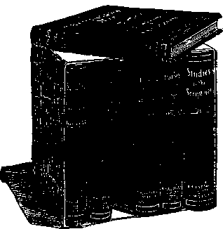

Vol. VI.
BROOKLYN, N. Y.
No. 4
DEEPEST CONTROVERSIES IN PROGRESS.
Very Rev. Henry Waco, dean of Canterbury, and a leader in the Broad Church party, has raised the cry that the English Church is in danger from Romanizing tendencies. He told the Convocation of Westminster that the present was the most critical period in the history of the Church of England since the Reformation. The deepest controversies that ever divided the church are now in progress.
The dean declared that there is an active, earnest and powerful body among the clergy which is avowedly aiming to bring the ceremonial and doctrine of the English Church in harmony with those of the Church of Rome. They have advocated, he said, the reintroduction of the invocation of the saints and the worship of the Virgin. Those on this (the evangelical) side of the church would exert every power they possess, parliamentary or otherwise, to prevent such changes.
The dean said a continuance of the present line was certain to bring civil war within the church, and this would entail its national ruin.—Rochester Times. _______________
THE GOLDEN AGE.
“We talk of the Elizabethan age, the Victorian age, the Golden age,” Rear Admiral Peary said at the dinner of the Delaware Valley >Society recently, and he reminded the guests that those •who shall live a year longer will have seen in five short years the north and south poles discovered and the Atlantic and Pacific united. They will have seen, to®, great extensions of wireless telegraphy and of the use of the stabilized flying machine, with perhaps a record of some man’s flying across the Atlantic. Prof. Soddy, who with Sir William Ramsay found that radium is a transmuting element, told the British Association last fall that the world must soon prepare for the announcement that a method of accelerating the outgo of energy from radium has been devised, together with the means of transmuting all the other elements, that would tap supplies of atomic energy that are inexhaustible, of which steam and electricity are secondary and insignificant offshoots.
If half the promise of this age is fulfilled, it should compare well with the other ages of human history. Thus far they have recorded great material discoveries and literary activities, as in the age of Queen Elizabeth; profound changes in religious belief, as in the age of Luther, or periods of conquest like those of Julius Caesar and Napoleon. This is the Age of the scientists. They, too, make material discoveries of vast moment, and the sidelights they throw on the psychology of man and his earthly existence have deeply changed the currents of the world’s thinking.—New York Times.
CLOTHING TO KEEP WEARER AFLOAT.
“A remarkable demonstration was given recently near Berlin of a new fabric designed to make clothing so buoyant that it will keep its wearer afloat in the water. The composition of the invention which brings about this result is a well-guarded secret. To don a garment lined with it is to become unsinkable.
“On the occasion mentioned, infantrymen, in full marching kit. clad in uniforms lined with the material, which rendered the clothing neither heavier nor thicker than usual, threw themselves into the water, and not only did not sink, but were able to ‘march’ in the water and to fire. At the same time, coffee was served to a party in the water, waiter and guests being clad in the special fabric.
“It is reported that recently the inventor, wearing his suit, jumped into the water before the Kaiser’s steamer to demonstrate the value of his device, and that the police arrested him for impropriety.”—Exchange.
EMPEROR CONSTANTINE WAS TRINITY-MAKER
“To us there is one God], the Father, * * * and one Lord Jesus Christ.”— 1 Corinthians 8:6.
THE confusion which has rent the Church of God into hundreds of sects has come through neglect of the Bible. The confusion is recognized by all Christian people everywhere, but the cause is not generally discerned. Church creeds are admitted to be defective, notwithstanding the truths which they all contain. Creed ciashings are the direct result of the serious errors in all creeds.
Realizing this, why should not all Christians abandon and demolish their creeds? They purport to be pen pictures of the Almighty God, and His attitude toward men and His resultant plans. No heathen idol is so grotesque, so terrible, so horrible, as that which the most intelligent Christian people have portrayed with the pen. We are all ashamed of having misrepresented our Creator as worse in His purposes toward men than the vilest of humanity—as bad as we knew how to picture Satan himself and his attitude. Why delay longer? . If Jehovah be God, let us worship Him. If the horrible Baal of the Dark Ages be no longer our God, let us destroy his creed images and endeavor to forget them.
Emperor Constantine’s Nicene Creed.
After the Christian Church had forgotten that the Master declared that His Twelve Apostles would constitute the chief foundation stones of the New Jerusalem, they began to recognize their bishops as successors to The Twelve—■ “apostolic bishops.” They overlooked the fact that while God had prophetically told that the place of Judas would be filled by another, this particularity itself intimated that there would be no successors to The Twelve.
The real successor to Judas, Bible •Students recognize in St. Paul. Through him God has given us the major portion of the New Testament, and special light upon the Church’s path, which is to “shine more and more unto the perfect Day.” We now see that the eleven Apostles, before they had been confirmed in Apostleship by the Pentecostal blessing, erred in choosing Matthias, whom God merely ignored.
Under these circumstances the bishops rose gradually to power and influence as inspired oracles of God. And proportionately. The Twelve chosen as the Lord’s mouthpieces to His Church lost their influence. It was easier to take the word of the bishops than to search the Scriptures at a time when copies of the Bible were very expensive, and few were able to read.
Thus Bible study greatly declined during the second and third centuries, and disputes between Christians and Greek philosophers led some of the bishops to extremes. Not only did they maintain the Bible teaching that Jesus was the 'Son of God, and that He left His Heavenly condition and became a man that He might redeem Adam and his race; but, not content with this, some went further, and in their zeal claimed that He was the Heavenly Father Himself, who came down to earth and took man’s nature and died, the Just for the unjust. In their anxiety to overwhelm the Greek skeptics, these Christian teachers involved themselves in absurdities, without realizing it. Those making the most absurd claims appear to have had the greatest influence with the illiterate.
Gradually the trinitarian theory was advanced ; and the mystification of saying that the Heavenly Father was His own Son, and that the Lord Jesus was His own Father, and that the Holy Spirit was another person and yet the same person, appealed to people who delight to reverence most those things which they do not understand. Thus to-day when questions are asked respecting the trinity -—how one could be three, and how three could be one—the answer which is given, and which satisfies the ignorant, is. Mystery, Mystery I
god. The same was in the beginning with the God. By Him were all things made that were made, and without Him was not one thing made. And the Logos was made flesh and dwelt among us, and we beheld His glory as the glory of the Only Begotten of the Father, full of grace and. Truth.”
Constantine the Trinity-Maker^
The Roman Emperor Constantine saw a vision—probably when wide awake—-a. vision of greater prosperity for himself and his Empire, by a recognition of Christianity as the religion of his Empire instead of paganism, which had previously been recognized. For that moment a certain portion of the Church of Christ had long labored. Abandoning the thought of the Second Coming of Jesus to establish His Kingdom, they desired marriage, or union, with earthly empire, thus to be set as a queen upon the throne of earthly dominion and honor.
Constantine’s influence in Church affairs became great. He proposed the calling of a council of all the bishops, numbering about one thousand. He wanted to know why these apostolic bishops, all inspired with the same Spirit of God, taught so differently. He offered to pay the expenses of all the bishops to the Council at Nice; but the majority, fearing that the Emperor would be under the-control of the Roman bishop (not yet claiming to be pope), declined to attend.
Only 384 came. But even they were unable to agree, the great point of dispute being the one we are discussing. Many held to the Bible teaching that Jehovah is the One Supreme God; that: the Lord Jesus Christ was His Son and honored Agent in all His creative work; and that He, having manifested faith and loyalty to the Father to the extent of leaving the Heavenly glory, becoming a man and dying, the Just for the unjust, has been exalted by the Father to His own right hand of majesty and power.
But the mystification thought of trinity had gained a hold on some of the bishops, amongst others the Bisbop of Rome. The. questions at issue were argued for months With all his powerful influence, the Bishop of Rome could not bring the majority of the Council to acknowledge the doctrine of the trinity. Thereupon Constantine decided the matter; and the Nicene Creed, backed by the Emperor's, authority and power, was declared to be the Christian faith, and anything contrary to it, heresy.
Yet be it remembered that only about one-third of the bishops were present at the Council; and that they could not be coerced into substituting “mystery” for the Word of God, until the Emperor lent his influence. His decree was that Christian doctrine as thus defined in the Nicene Creed should have the prestige of the support of the Emperor and of all his subordinate officers throughout the Roman Empire. All believing contrary to this creed. would be heretics, and be considered in opposition to the Emperor, and such had the privilege of leaving the Empire. _ Thus was the mystery of trinity enshrined by a heathen emperor, not baptized—not even sprinkled.
The history of the persecution of all who would not worship the trinitarian mystery would fill volumes. One sad illustration is familiar to all—the burning of Servetus, by good Brother Calvin’s signature to the death warrant.
Is it any wonder that with such conditions prevailing for centuries, the Bible ignored and the creeds worshiped, the true teachings of the Bible on many subjects were completely lost sight of? Is it any wonder that, when in the sixteenth century God began to bring the Bible back to the attention of the world, it was burned by the bishops in front of St. Paul’s Cathedral in London? Is it any wonder that the Christians of that time-were persecuted for studying it, and could meet only in secret?
The Difficulty at Present.
It seems sad indeed that now, in the dawning of the New Era, and its clearer light on the Bible as well as upon all things, so few Christian people should be prepared to profit by these clearer views. Only in our day is thorough Bible study possible to the majority in civilized lands; for only of late is there a suf-{Continued on 2d page, 2d column.)
But the Bible makes no mystery of the matter. It never mentions trinity at all, nor anything that would give such a suggestion. The one text (1 John 5:7) which seems to give a color of support to the thought is now admitted by all scholars to be an interpolation dating from about the seventh century ; for it is not found in manuscripts written at an earlier date. The Revised Version shows quite distinctly how the passage reads in Rie old manuscripts, and how the forgery to support the trinitarian theory was adroitly accomplished.
“To Us There Is One God.”
The Old Testament Scriptures represent the Divine Message of four thousand years, and say not a word respecting the trinity. On the contrary, they declare, “Hear, O Israel, Jehovah thy God is one God”; “Thou shalt have no other gods.” To keep in line with this definite statement, the trinitarian theory claims that this one God has three persons, although others claim that there are three Gods but only one person. It seems impossible to get a trinitarian to decide what he really believes; he hedges with the word “Mystery.”
The New Testament is as explicit as th» Old in its statement that there is but one supreme God. Jesus testified to this, declaring, “My Father is greater than I” -—greater than all. (John 14:28.) Jesus declared that of Himself He could do nothing; that He was merely the Mouthpiece of God in His teachings, and the Finger of God in His working of miracles. He directed that His followers should worship the Father, and declared, when leaving, “I ascend to My Father and to your Father, to My God and to your God.”—John 20:17.
'Our Lord did indeed declare the oneness, or harmony, between Himself and the Father, but He explained that this was because He ignored any will of His own, coming not to do His own will, but the will of the Father who sent Him. He exhorted His disciples similarly to have the same mind, the same will, the same spirit, which actuated Him—the Holy Spirit, the mind or disposition to do the will of the Father in Heaven. His prayer for His disciples was to the same effect, “That they all may be one”—even as Thou, Father, and I are—one in heart, mind, will, disposition, or holiness of spirit, harmony with God.—John 17 :20, 21.
What could be more explicit than our text, “To us there is one God, the Father, of whom are all things”; additionally, “To us there is one Lord [or Master], Jesus Ghrist, by whom are all things, and we by Him”? The Apostle here not only shows the relationship between the Father and Son, but he ignores and thus disowns entirely the Holy Spirit as another God. Clearly and plainly enough he sets forth time and again that the Holy Spirit is the spirit, will, mind, power, disposition, etc., in fullest conformity to that of the Father. 'There is no mystery about the matter, none whatever.
“The Alpha and the Omega.”
Our Lord Jesus declared Himself to be the Alpha and the Omega of the Divine direct creation. (Revelation 1:8). He was its Beginning and its End, according to John 1 :l-5. Our Redeemer, known before He became a man as the Logos, was the Beginning of the Divine creation and the End of it in that, ever after the creation of the Logos, Jehovah operated in and through Him in respect to all the stupendous works of creation. His name, the Logos, indicates all this; it signifies the Divine Message, or Messenger, the One through whom Jehovah’s utterances and decrees went forth.
So we read in the Greek, “In the beginning was the Logos, and the Logos was with the God, and the Logos was a
(The Sthlr S’tuiiriita
PUBLISHED AT
13-17 HICKS ST., BROOKLYN, N. Y. C. W. HER, Editor.
Monthly—12 cts. a year. Single copies, 1c.
An Independent, Unseetarian Religious Newspaper, Specially Devoted to the Forwarding of the Laymen’s Home Missionary Movement for the Glory of God and Good of Humanity.
PREPARING TO RESTORE TEMPLE OF SOLOMON.
The Jews are preparing to restore the temple of Solomon. The whole world is being stirred by a startling movement of the Jews toward their homeland. Ten years ago there were only 1,000 Jews in the city of Jerusalem, there are now 100,000. More than 200,000 Jews are found in the colonies recently established in Palestine. These are proving successful; good crops are being raised.
More than $20,000,000 is being invested in railroads. Within the next few months Jerusalem will have become a city of electricity; rails are being laid for electric cars. The Jews have $5,000,000 in a Jerusalem bank. They have purchased a large amount of land.
Until forty years ago the land of Palestine was arid. There were few inhabitants. There is a prophecy which reads, “In the last days I will pour out upon you again the latter rains.” Rain has come in abundance in the last few years; Palestine again blossoms. Ten thousand olive trees have been planted in Samaria. - '
It is believed that Jerusalem will become as of old the market-place of the Orient, and that Palestine will again “flow with milk and honey.”—Philadelphia Evening Times.
BEES END OF MILITARISM.
Speaking on militarism, Alfred Noyes, the poet, said that indications pointed to an end of what he called the preposterous position of Europe in this day of heavy armament.
“The end,” said Mr. Noyes, "may be catastrophic and thrones may shake before it comes, but come it must. The signs, however, indicate that Europe may prefer not to wait for the catastrophic end.”
Mr. Noyes spoke of the English Government consigning a $250,000 ship to destruction as a target for practise at ’tiie very time she reported herself unable to afford the slight relief needed to keep Charles Dickens’s children out of humiliating dependency. He also mentioned an English statesman who instructed his attorneys to bring suit against a firm of armament manufacturers for commissions due him on business received through his influence.
“We are moving in a vicious and narrow circle,” said Mr. Noyes. ‘“We in England are agreed that we are strengthening our armaments because the other nations of Europe are strengthening theirs, and they say they are doing so because we are. So it goes. Think of how much disease, how much poverty could be alleviated if we utilized properly the natural resources of our countries instead of spending millions of dollars in armaments. Is it to remain a .fact that after two thousand years of civilization statesmen holding opposite views cannot meet and come to a business agreement like other men?”—New York Times.
HOW IT FEELS TO BE STRUCK BY LIGHTNING.
The following description of how it
struck by lightning is inter
years ago I was working in of a public institution and in a terrific thunder storm.
feels to be esting: “Several the garden got caught
The building sits upon a knoll, and as I was hurrying along I saw the upper half of a big locust tree sliced off by a glittering flash, and fall, and instantly a blinding cloud of fire wrapped me about like a scorching sheet, blotting out sight and hearing in one awful roar. I was choked by the smothering hot fire, and smell of sulphur, and felt every nerve and muscle strain until my joints cracked. I felt myself lifted up, and swept backward, and cried out something, but could hardly hear my voice. I was lying on the wet gravel, hatless, ten feet further down the road; and the gardener coming towards me. He had been watching, and declared he thought he saw the lightning hit me on the head. I felt sore and dull, and that night when I went to bed I found a scorched stripe half an inch wide down all my underclothes, a hole in my sock, and my shoe sole half off-
X WHAT IS THE SOUL? & & A postal request will secure a free
& copy of this paper which treats the A subject fully. Address I. B. S. A., A
2b 13 Hicks St., Brooklyn, N. Y.
{Continued from 1st page, 1th column.} ficiency of education to admit of intelligent Bible study. What is the explanation of the failure to make use of all these blessings, favors, privileges and opportunities for Bible Study? It is loss of faith; as Jesus said: “When the Son of Man cometh, shall He find the faith on the earth?” It would appear that with more advantages than any previous generation, ours has less faith in God and less trust in the Bible as His Word.
The cause of this can readily be traced, and it appalls us ! Our great institutions of learning, founded by our Bible-loving, God-fearing forefathers, have become worldly-wise. They have followed the course of leaning to human understanding, against which we were forewarned by God—that the wisdom of this world is foolishness with God and will perish.
Following the guidance of so-called Higher Critics, the rank and file of professors of colleges have lost their faith, and at the present time, all over Christendom, are engaged in destroying the faith of the most intelligent young men and women of the world. Having lost faith in the Bible themselves, they think they
The Return of The Great King of Glory
“■<4 certain Nobleman went into a far country to receive for Himself a Kingdom, and to return.”
—Luke 19:12.
WITH remarkable perversity many of the Lord’s dear people in studying the Bible have read into it the very reverse of what it plainly declares. Our text is an illustration along this line. Our 'Lord is here represented as a Nobleman, the heir of the Kingdom, going to Heaven, there to be invested with the real authority and power of Divine sanction, and then to return again to establish his authority among men, to put down all unrighteousness and sin, to lift up the poor and the needy and to grant the blessings of a reign of righteousness to all the families of the’earth.
The statement of the parable that the Nobleman went into a far country was evidently intended to show that His return should not be looked for speedily, and that He will not take possession of His Kingdom until His return. How strange, then, that it should have become a generally accepted view among the Lord’s followers that He set up His Kingdom at His First Advent; that He has been reigning ever since; that ultimately His Kingdom will conquer the world by converting it to loyalty to Him, and that His Second Advent will not be for the purpose of setting up His Kingdom, but to see how well that Kingdom has prospered during “His absence, and to wind up matters and burn up’* the earth! When we compare this general view with the statement of thia parable, how inconsistent it seems!
More than this, it is contrary to all the facts as we know them! Our Lord did not Set up His Kingdom at His First Advent. At that time, however, He declared that ultimately He would be the King, and that when He would set up the Throne of His glory His faithful followers would be sitting with Him on His Throne. (Revelation 3:21.) Again He says, “When the Son of man shall come in His glory, and all His holy angels with Him, Xhen shall He sit upon the Throne of His glory.” (Matthew 25:31.) But who will say that this has been accomplished? Where is the Throne of Glory? What evidence have we of its establishment? Where is the reign of righteousness? 'What conquering of the world has been accomplished in eighteen centuries?
“God Is His Own Interpreter ”
The context of this parable should be read also. In the preceding verse we are told that one object in giving the parable was to correct a misapprehension in the minds of the disciples and the public, “Because He was nigh to Jerusalem and because many thought that the Kingdom of God would be immediately manifested.” The object of the parable was to show that the Kingdom of God would not be manifested immediately, but that a long time would intervene during which the King would be in the “far country,” receiving His investiture of office. The parable was not written to indicate that our Lord’s Kingdom would be merely a spiritual reign of grace in the hearts of His people; in fact, no thought of this kind is contained in it. On the contrary, the Kingdom thought is in it to the fullest degree, with the other thought that there would be a long interim between that time and the Kingdom’s establishment, and that during the interim the Lord and His Kingdom would be represented amongst men by those who were faithful to Him, “His own servants.”
It should also be noted that to these
We are not disputing that all who are the Lord’s consecrated people recognize the Lord Jesus as their King; what we are disputing is that He is the King of the world, “King of kings and Lord of lords.” He is yet to occupy that position, and to Him ultimately every knee must bow and every tongue confess. (Phil. 2:9-ll.) But no sane person surely would contend that this is true at the present time, or that it has ever been true in the past. Let us not deceive ourselves. These erroneous views have never come to pass. The Divine purpose will be accomplished, and the more clearly and truthfully we discern this fact the greater will be our blessing, and our growth in knowledge and in the fruit of accompanying obedience.
He must be mentally blind who cannot Bee that the god or ruler of this world, this Present Age, is the Adversary, and not mmanuel. Indeed, whoever believes in the ultimate conversion of the world after noting that the number of the heathen without a knowledge of God is twice as great as a century ago, notwithstanding, the fact that that was a century of intense missionary zeal, must be very obtuse! Who would suppose that the converting even of the 1,200,000,000 of humanity to the mental, moral and physical condition of the 400,000,000 of so-called Christians would signify that God’s will would then be done on earth as it is tj-----n
J servants were committed some of their Master’s treasures; and that they were to occupy until He should Come, mean-time showing their loyalty as His serv-’ ants by the degree of their activity in His interests. In this there is no suggestion ! that when the servants should die they 1 would go to that “far country” to be with their King, and there receive their reward for well-doing or ill-doing. The very opposite is taught; namely, that there would be no rewarding of any of •the servants until the return of the King. Then He will call for His own servants and reckon with them, rewarding some and reproving others, according to their faithfulness. We should note that this is in accord with the entire teaching of the Bible. It was our Master Himself who said, “No man hath ascended to heaven, eave He who came down from heaven, even the Son of Man.”—John 3 :13.
It was the Apostle Peter who incidentally remarked, “David is not ascended to the heavens,” but that “his sepulcher is with us.” (Acts 2:29-34.) Again, when epeaking of His going away, our Lord said to the Jews, “Whither I go, ye cannot come.” (John 7:34.) Again, He eaid to his disciples, “A little while, and ye shall not see Me; and again, a little while, and ye shall see 'Me, because I go to the Father.” (John 16:16.) And eo all the Scriptures point to the fact that our Lord’s rewards are to be dispensed at His Second Coming, but not before. We read, “Henceforth there is laid up for me a crown of righteousness which the Lord, the righteous Judge, shall give me at that Day; and not unto me only, but unto all those who love His appearing.” (2 Timothy 4:8.) Again, “Behold, I come quickly; and My reward is with Me, to give every man according as his works shall be.” (Revelation 22:12.) And again our Lord’s words to His followers when He was leaving them, “Now ye are fearful, because I said unto you I go unto My Father.” (John 16:5, 6, paraphrased.) “And if I go, I will come again and receive you unto Myself; that where I am, there ye may be also.”—-John 14_l3.
Error has so beclouded this clear statement that many have received the impression that Jesus comes again every time one of His faithful followers dies. According to this theory, the Second Coming of Christ would be a very indefinite matter; indeed, if His followers died but one a day, it would signify that His Second Advent would occur all the time.
are doing a real service in destroying the faith of others.
With college graduates sneering at the Bible, and ignoring Divine worship, except in the sense of drawing nigh with their lips; is it any wonder that the spirit of this infidelity is gradually extending to the masses—the less educated? Is it any wonder that these who have nothing in particular to gain from religion except comfort and hope, bereft of these, care nothing for Bible study or for church attendance, except to hear the music or a brilliant address or to renew acquaintanceships ?
Balm of Gilead the Remedy.
The only remedy which can hinder the world from rapidly rushing on toward socialism and anarchy, in utter disregard of God and His Divine arrangements, is a return to Bible study. Nor need the people be invited back to study the Bible along the lines of the creeds. Indeed, in order to attract attention to the Word of God, it is necessary that Christians should unite in smashing their creeds and in telling the people plainly that these creeds thoroughly misrepresent the Divine Character and the Divine Plan.
every day; and thus the error makes the whole teaching of the Scriptures on this subject worse than meaningless—confusion. And such is the very effect; for we notice everywhere amongst Christian people that instead of knowing wnat they believe and why they believe it, and resting their hearts upon the precious promises of God’s Word, confusion prevails. Then “higher criticism” steps in and persuades the confused ones that the Bible is not the Word of God, but they have been hoaxed for centuries. Thus it overthrows their faith and stumbles them into a more refined form of infidelity than that which had prevailed, but which is nevertheless unbelief, a condition in which they are without God and have no hope in the world, no “Anchor to their souls, sure and steadfast within the veil.”—Ephesians 2:12; Hebrews 6: 19, 20.
“Called His Own Servants.”
Notice the order of procedure in the parable: The first work of the King on coming into His dominion is' not to deal with the public in general, or even with His enemies; but as we read He will call first for His own servants and reckon with them. This makes evident the fact that at first the Kingdom of Christ will not be generally recognized by mankind. Its power and great glory will be present, but will be hidden from them because it will be spiritual—not visible to mortal eyes except as revealed through human channels and agencies. Our Lord Himself, a glorious spirit Being, and His holy angels with Him. also spirit beings, will be invisible to mankind; even as He declared to the Pharisees, “The Kingdom of God cometh not with observation [outward show, display]. Neither shall ye say Lo here! or, lo, there! for the Kingdom or God shall be in the midst of you” (Luke 17:20, 21) ; everywhere present though nowhere seen; present in power, though hidden from view, revealed by its operations and through its servants, but not to natural sight.
In our understanding of things we have now (for nearly forty years) been living in the days of the presence of the Son of Man, in the time when He is calling for His servants and reckoning with them, preparatory to His dealing with the world in general. The thought is •Scriptually based, although this is not the proper time for discussing the proofs that this is so. Many of you have these Scriptural proofs; others can obtain them if desirous to do so. This thought is properly a very impressive one to all who receive it—very stimulating and very energizing, one well calculated to awaken us from slothfulness and slumber, and to stimulate us to activity. Some, we understand, have already rendered their accounts and passed beyond the veil. The remainder of us should feel deeply in earnest to use present opportunities for the increase of the Master’s goods committed to our care.
The “Pound? of the Parable.
It will be noted that each one of the servants in this parable received the same amount of money. Each was to be a steward and do his best with the amount at his disposal. In seeking the significance of the "pound” we must bear these facts in mind; for this parable differs, in this respect, from the parable of the talents, in which tne division was unequal— “To every man according to his several ability” (Matthew 25:16). The pound, therefore, must signify something which is common to all alike, yet which all will not be able to use to the same advantage; for it will be noticed that the Lord gave similar words of approval to the one whose pound increased to five and to the one whose pound increased to ten. Both were called good servants. They evidently had different talents, different abilities for the successful use of the money intrusted to their care.
We cannot say that the pound represents the Holy Spirit; for though the latter is given to every consecrated one, we remember the Apostle’s word that a measure of the Spirit is given to every man to profit withal (1 Corinthians 12:7) ; but not the same measure, for all do not have the same capacity. Our Lord received the Holy Spirit without measure; because of His perfection He had the full capacity.
FREE LITERATURE!
Send postal-card request to the Editor for free copies of this paper. Some of the interesting subjects you may have for asking are:
Calamities—Why Permitted?
Creed Idols Smashed!
Spiritism Is Demonism!
Cardinal Gibbons’ Sermon.
Prince Lucifer of Old Now Prince of Demons.
The Hope of Immortality.
Do You Believe dn the Resurrection?
Most Precioup Text.
Our Lord’s Return.
Which Is the True Gospel?
What Is the Soul?
The Rich Man in Hell.
Thieves in Paradise.
The Handwriting on the Wall
Purgatory Fires! Not Now, But Soon.
Greatest Thing In the Universe.
The Sabbath Question.
The Battle of Armageddon.
We each receive the Holy 'Spirit according to our capacity; and the capacity may be increased as we grow in grace, knowledge and loving zeal. INeither could the pound represent faith, for the .Lord’s people, differently constituted, are not all able to exercise the same degree of faith at the beginning and subsequently. 'Neither could it represent money, for the Lord’s people do not each have the same amount of money committed to their care.
The one gift of God which suggests itself to us as being represented by the pound is our justification, which is full, free, complete to every man. The one who has the fewest talents and who is the most degraded, being justified by faith, is reckoned as perfect. The one having more talents, more abilities, and fewer imperfections still needs the justification, and by it is merely reckoned perfect. This justification was given to us when we first became the Lord’s servants, when we first fled from sin and laid hold upon His righteousness and forgiveness. This justification became the basis of our sacrifice ; through it we had something to or-fer to the Lord—our justified selves, our bodies. These the Lord accepted and constituted us new creatures by the begetting of His Holy Spirit.
Our justification, however, did not cease when we were begotten of the Holy Spirit, but still persists. We still need the covering or merit of our Lord’s imputed righteousness to make acceptable to Him anything that we may do in His service. Hence, in the parable it is represented that when taking His journey afar, the “nobleman” committed a pound to each of his servants, saying, “Occupy till I come.” The fulfilment of this seems to be that our Lord says to us, whoever we are and whenever we become His disciples : Take that which My blood has justified and made acceptable, ard which you have in sacrifice presented to Me— your mortal bodies—take these and use them in My service until I come and reckon with you. According to your use of these mortal bodies and their various talents and powers in 'My service will be My approval at My coming, and your reward shall be proportionate.
At His Second Coming all these are to have their reward. The parable is merely illustrative, mentioning the one who made no increase, the one who multiplied his talent five times and the one who multiplied his ten times. But in actual experience we understand the matter will be different, to the extent that some will multiply their talents eight or nine, seven •or six, four or three times, or twice, and still be approved by the Master, if they have done what they could, if they have used their talents to their best judgment •of what would be honoring to Him. St. Paul we may suppose to have been one ■of the most faithful of all the Lord’s followers. Perhaps he would be represented by the one who increased his pounds to ten. St. John and St. Peter were evidently not much behind in their activities and zeal, but it is not for us to judge who have been the most faithful of all the Lord’s followers. The Lord, who know-eth the heart, will decide the matter in •due time, and all who have the proper spirit will rejoice with those who do rejoice and mourn with those who mourn.
“Laid Up in a Napkin.”
One of the servants returned to his Master the pound exactly as he had received it. He had carefully laid it away, too much afraid to use it; in fact, he did not have zeal enough to use it. The King was displeased with him, and we fear that he represented quite a large class of the Lord’s servants who, having been justified through faith, have made a consecration of their all to the Lord and to His service and who are seeking to live merely in a justified condition and are not striving to use the time, influence and opportunity in the service of the Truth.
This servant had more fear than love, and the fear hindered his usefulness. Perhaps he represents a class whose love for the Lord has been greatly marred by reason of the false teachings and “doctrines of devils,” which so egregiously misrepresent Him. He was ’■eproved by his Master and dismissed from being a servant with the others, and his pound was taken from him. Not having sacrificed his humanity, his earthly interest, he would now henceforth find no opportunity for sacrificing. The additional opportunities, favors, privileges, would be granted to the one who had most thoroughly demonstrated his love and zeal. But what was done to this servant who hid the Lord’s money in a napkin, and kept it instead of using it? Are we told that he was sent into eternal torment? Not a word of it! His loss was a heavy one, however; he failed to enter into the privileges and blessings of the faithful servants; that failure would be punishment enough for him.
Let us notice the rewards given to the faithful servants: To the one of ten 'alents it was said, “Have thou dominion jver ten cities” ; to the one of five talents it was said, “Have thou dominion over five cities.” What does this mean? Is such a reward at all in harmony with the ordinary expectation of Christendom that at our Lord’s Second Coming the world will be burned up? If so, what is meant by these five cities and ten cities? Most evidently Christendom is astray and this record is quite right. The thought is consistent with the entire parable. The Lord of the parable returns, invested with Kingly authority, to .take possession of His dominion, to rule it, to bless it by a reign of righteousness, to uplift all who will manifest their loyalty to Him and to righteous principles, and to chasten and correct all who have sympathy with wrong principles and who are His enemies, and ultimately to destroy them if they continue in their wrong attitude.
WINNING CHRIST-LOSING ALL ELSE.
"Yea. doubtless, I count all things but loss for the excellency of the knowledge of Christ Jesus My Lord .... that I may win Christ."—Philippians 3:8.
EVEN saintly Christians seem but imperfectly to grasp the plain teachings of the New Testament respecting membership in the Body of Christ. Some assume that it is to be had on some basis of favoritism, and trust that they will be of the Elect. Others think that the Apostle is using figures of speech in an extreme fashion, and vaguely hope that they belong to the right Church and will attain whatever others get, as in the success of a party in which all the victors share the spoils.
No doubt the errors of the Dark Ages absorbed in childhood have been more or less responsible for these vagaries and for our general neglect of proper Bible study. It seems hard for the people of God to realize that the Wisdom from Above is the noblest science and the best instruction; and that it needs intelligent and systematic study as much as do earthly sciences. But we are learning, and. thank God! progress is being made in vnsnr'tnrian Bible study classes, which are springing up all over the world.
Conversion Not Winning Christ.
What is ordinarily termed conversion is not what St. Paul refers to in our text as “winning Christ.” The word conversion signifies “to turn about.” It implies that a wrong course has been pursued, that the error of the way has been detected, and that a change to the proper one has been made. The wrong course is the sinful course, which brings injury and injustice on others. We never had a right to take that course; yet to some extent we are excusable; for we were born with downward tendencies, an inherited predisposition to sin.
We inherited these depraved appetites and tendencies from our forefathers under the general laws of heredity. A realization that sin always brings sorrow is a sufficient reason for a change of course. Conversion, therefore, is merely the operation of a sane mind in turning about frojn things recognized to be injurious. Every sensible person, should be converted from sin to righteousness.
Conversion may have Christ connected with it, or it may not. Many are converted without any real knowledge of the Gospel of Christ. They merely knew that they were going in a wrong direction, and turned about to take the proper course. But this we can say, that only strong characters can successfully pursue a right course, and strong characters are in the minority. Whether strong or weak in character, great aid will surely <be experienced by those who, at the time of their conversion, have a knowledge of Christ and an appreciation of His work and His teachings.
Nothing else gives such fortitude as the hope set before us in the Gospel, and the realization that there is a future life provided through Christ for all mankind, and that our course in the present life will have much to do with the stripes, or punishments, we shall receive here or in the future life—necessary to fit us for Divine favor and everlasting life.
What Winning Christ Means.
One might reform his life, and have a knowledge of Jesus and of the life to come secured through His death, and of the fact that “whatsoever a man soweth that shall he also reap,” and yet, with all that conversion, belief and reformation of life, he might not be a Christian at all, in the Bible sense of that term. We would not by this discourage anybody from taking the reformatory steps already outlined. We would, on the contrary, encourage them so to do.
. As already stated, reformation and righteous living commend themselves to all intelligent minds as right and advantageous, beneficial to the individual himself as well as to the world of mankind. Let us discuss Christianity, not from the ordinary standpoint, which classes every civilized person as a Christian, but from the Bible standpoint, which assures us that if any man is a Christian he is a New Creature—“old things have passed away; all things have become new.”
To understand our text we must first appreciate the general outline of the Gospel—the Divine' Plan of Love for hu
These “servants” represent the Apostles and those who have believed on the (Lord through them throughout this Gospel Age. To all of these the promise was made, “To him that overcometh will I grant to sit with Me in My throne” (Revelation 3:21). All of this sanctified class, therefore, shall be granted a share with the King of kings and Lord of lords in His great work of putting down sin and overthrowing death and raising up humanity out of this condition to harmony with God and eternal life—to the extent that they are willing to avail themselves of these privileges.
man recovery from sin and death. That Plan was first of all declared to Abraham ■—that God would eventually bless all the families of the earth and that the blessing would come through his posterity. “In thee and in thy Seed shall all the nations of the earth be blessed.”— Galatians 3 :8, 16, 23.
Later on, God revealed that Abraham’s ’Seed would constitute a special Kingdom class, which would rule all nations for their uplift. When Israel, by failing to keep the Law, failed to prove itself the holy nation fit for the Divine service, God revealed that He would send a special Messenger of the Covenant; and ■that through Him, as Prophet. Priest and King, the holy nation would be established ; and later on it would be given ■the glory and honor, the rule of the world.
Our Lord Jesus at His First Advent began the work of selecting this Kingdom class. First o2 all, He laid the broad foundation by dying for the sins of the whole world. Then from amongst the redeemed ones He began to select the members of the Kingdom. Ana this has been the work of this entire Gospel Age.
Soon the selective, or elective, work will be finished. 'Soon it will be determined who will be of the Kingdom class-God’s determination will be manifested in the fact that the overcomers will all be sharers in the First or Chief Resurrection, to be priests unto God and unto Christ and to reign with Him on the earth.—Rev. 20:6.
“Abraham’s Seed, and Heirs.”
All who will be of that select Kingdom class will be members of the foretold Seed of Abraham. Jesus was of Abrahamic stock through His miraculous birth ; and after He had laid down His life sacrificially and was raised from the dead by the glory of the Father, no more a man, but a New Creature of the Divine nature, He then was Abraham’s ■Seed on the spirit plane. His Church, called to be of the Kingdom class, are to be Abraham’s Seed on the same spirit plane.
We are not ignoring the fact that Abraham has an earthly seed as well, and that to it belong certain earthly promises. We are merely pointing out that the Scriptures clearly teach that the earthly seed cannot have its share in the work of blessing others until first the Heavenly Seed, the Spiritual Seed of Abraham, shall have been perfected in the 'First Resurrection. God showed the two seeds in the statement to Abraham, “I will multiply thy seed as the stars of heaven [the spiritual, the Church] and as the sand which is upon the seashore” [the earthly].—Genesis 22 :17.
’St. Paul tells us that this Seed of Abraham, Jesus and the Church, spirit-begotten, are unitedly the Church. Using a human body as an illustration, he speaks of the anointed Jesus as the Head, and of each one of the Church as a member of the Body of Christ. Thus we read, “If ye be Christ’s, then are ye Abraham’s Seed, and heirs according to the promise?” (Galatians 3:16, 29.) Thus we see that St. Paul was anxious to w’in a membership in the Body of Christ, the Church.
The Apostle, of course, was a member of the Church from the time of his be-
getting of the Holy Spirit. But there are two bodies of Christ, if we may express tne matter. One is the probationary Body of the present time; the other the actual Body of the future. All fully consecrated believers are members of the probationary Church, or Body of Christ, from the moment they receive the •begetting of the Holy Spirit. Thenceforth they are to fight a good fight, to run a successful race, that they may win the glorious position which God has invited them to fill.
The Bible Election Is Different.
We well know the objection that many have to the doctrine of Election. We know how opposed to it we were until we saw how different is the Bible Election from the Election which Brother Calvin taught. In the Bible Election God does the nominating, and each nominated person either makes his calling and election sure, or fails to do so. The responsibility lies with the individual favored with a knowledge of God’s Truth, which knowledge constitutes a call.
Furthermore, the Bible Election works no injury to the non-elect. Quite the contrary. The Election of the Kingdonr class, along the lines of character-development, obedience to God and self-sacrifice, is for the very purpose of qualifying these elect ones for the great work to .which they are called. The elect Seed of Abraham is called for the purpose of blessing all the families of the earth
In the light of this view of Election, how reasonable are the Bible presentations ! And how trials, difficulties and sacrifices—to which the Church is subjected—are evidently necessary for our testing and development in the characterlikeness of the Lord! and thus they are a preparation for a share with Him in His future work.
A knowledge of the Divine Plan is very valuable to all who seek to run the race. If we knew not the object of our ■trials and difficulties, how could we so well learn to endure them patiently! But if we know that God is thus giving us lessons to prepare us for His service in Messiah’s Kingdom, how it cnanges the aspect of the entire matter!
As St. Paul declared, we may even come to the place where we shall rejoice in tribulation, knowing that tribulation worketh patience and patience experience, and experience hope, because the love of God is shed abroad in our hearts, and because we realize that the developing of the fruits and graces of the Holy Spirit is a preparation ; and that thus, as St. Peter says. “An entrance shall be ministered unto us abundantly into the everlasting Kingdom of our Lord and Savior.’’
What of Those Who Fail?
The Scriptures clearly show that two classes will fail to win the prize, even ■after having been begotten of .the Holy Spirit. One of these classes the, Scriptures liken to the sow who returns to her wallowing in the mire, losing the Spirit of the Lord, the Spirit of the Truth, and abandoning their consecration altogether. ■.(2 Peter 2:22.) These will die the Second Death. Whether their number is large or small is not for us to judge. We may reasonably hope that such unfaithful characters do not predominate.
Then comes another class that the Scriptures declare will fail to get the Kingdom prize. Although members of the Body of Christ now in the present life, they will not be amongst the “more than conquerors” who will be members of the Body beyond the veil. These are represented as a “great company.” How great their number is, in proportion to the number who win Christ, the Scriptures do not tell; therefore we may safely withhold judgment in the matter.
The Scriptures tell us that while these love the Truth, appreciate their Covenant of Sacrifice, yet they fail to complete the sacrifice they had agreed to make; and the hindrance is their lack of sufficient love for the Lord and His work. Their lack of zeal leads them bo hold back from sacrifice, although they do not draw back to wilful sin, as do the other class. They hold back through fear of death, writes the Apostle : “Who through fear of death were all their lifetime subject to bondage,” restrained from going on in the footsteps of Jesus and the Apostles to make their election sure.
PASTOR RUSSELL’S
EIGHT MILLION COPIES SOLD!
■ (19 Languages)
NOW OFFERED AT ALMOST COST
Entire Set (over 3,000 pages) $2.65 Postpaid (this price also includes one year’s subscription to Pastor Russell’s semi-monthly Journal, The Watch Tower, sent as a premium to each purchaser).
THE TIME HAS COME
When facts well known to theologians should be plainly told to the public.
Order Direct from the Publishers
BIBLE SOCIETY
13-15-17 Hicks Street Brooklyn, N. Y.
MESSIAH’S GLORY AT THE DOOR.
"Thou hast put all things under Him.”—Psalm 8:6.
OUR text is a prophecy respecting the Divine intention that eventually Messiah's Kingdom shall be established in majesty and power. Victoriously it shall overthrow the Prince of Darkness and his reign of Sin and Death. Gradually it will emancipate humanity, healing their sin-sickness, opening their blinded eyes of understanding, and unstopping their deaf ears to the Message of Divine grace and peace. Eventually every knee shall bow and every tongue confess to the glsry of God. In the language of our text. Divine Power will be exercised through Messiah and His Kingdom to the full subjection of every earthly thing to Him.
From day to day we repeat the Lord’s prayer, ‘‘Thy Kingdom come ; Thy will be ■done o’n earth, as it is done in Heaven.” Its fulfilment would be impossible aside ' <m the associated promise of the Bible ■rat the present Dispensation of preach-
..; the Gospel is eventually to give way .u the Messianic Kingdom and its reign p' force. Many Christian people en-'■"ely overlook this feature of the Divine U-ogram—that the New Dispensation is to be ushered in by a Time of Trouble ■which will wreck everything not fully in accord with the Divine standards.
A Kingdom of Power and Glory.
We remind you of the Divine decree respecting Messiah’s Kingdom recorded in She Second Psalm: “I will give Thee the heathen for Thine inheritance, and She uttermost parts of the earth for Thy jpossession. Thou shalt break them with A rod of iron ; Thou slialt dash them in •pieces like a potter’s vessel.” This prophecy is referred to by our Lord, who declared that its fulfilment would be after the completion of His Church, to participate with Him in the work of bringing the world into proper subjection to the rules of righteousness, justice and love. He says, “To him that over-cometh will I grant to sit with Me in My Throne.” “He that overcometh
. . will I give power over the nations; and he shall rule them with a rod <af iron; as the vessels of a potter shall they be broken into shivers; even as I received of My Father.”—Revelation 3:21; 2:26.27.
A failure to apply vhe Scripture portraying the transfer of the government of earth from the Prince of Darkness to the Prince of Light has confused the minds of many and led them to expect things contrary to the Divine Word. The very Scripture so frequently quoted in support of a gradual conversion of the world declares that this transfer will not be by the conversion of the world— that it will be by Messiah’s taking possession of man’s inheritance purchased by Him for humanity at Calvary. The nations will become Christ’s by the conquering power of the terrible trouble in which the nations will be angry and God’s wrath will come.—Revelation 11:15-18.
The Pendulum's Swing.
In the long ago our forefathers studied iJihese Scriptures, but misunderstood and misapplied them. They assumed that God had given to the Church authority to establish His Kingdom. The espoused virgin Church became united or married to the world—to civil power—and ceased to wish for and to pray for the Heavenly Bridegroom to whom she was -espoused through the Gospel. Under the delusions that she had been authorized to establish Messiah’s Kingdom and that her share in earthly dominion brought about by union with civil power constituted it the Kingdom of Messiah, the Church endeavored to apply and to fulfil these prophecies.
An attempt was made to rule the world with a rod of iron through the civil governments, and to put under the Church’s feet everything antagonistic to her supposed rights and interests. As a result of this mistaken interpretation of the Lord’s Word, the world was drenched with blood, and atrocities were committed by professed followers of Christ, who, however sincere they were in many respects, served the cause of Satan and misrepresented the cause of God.
Imperfect human reasoning is apt to go from one extreme to the opposite. Hence, revolting from the thought of the Church’s conquering the world by sword and flame, by thumb-screw and rack and stake, the general misconception turned to an expectation of conquering the world by the Gospel Message. This second mistake is not so serious in some respects as the first—■ it does not involve horrible atrocities in the name of God and the Savior. However, it is equally misleading as respects the truth. It sets aside the Word of God and substitutes the human theory that the preaching of the Gospel is to convert the world. The Divine Word is that the preaching of the Gospel is for the purpose of selecting a Church to Oe Messiah’s joint-heirs in His Kingdom.
If the Church could convert the world with the Gospel, it would be very fine. Sut it is surely absurd to so expect in .rhe fiace of our experiences of the past century and of the plain Statements of God’s Word to the contrary. All see that the world is not being converted, and that if Christianity cannot convert the people at home, it would be vain for her tc expect to convert the heathen abroad. If great religious centers such as London, Rome and Washington are no nearer to having God’s will done in them as it is done in Heaven, what hope would there- be of better results in heathendom?
We are not saying one word against Foreign Missions. God forbid I In proportion as we are able to send the light of Truth into more benighted lands, let us do so. But, if possible, let us send the True Light from God’s Word. And l“t us trim our lamps that we ourselves may have that True Light in our favored land. What we urge is that Christian people should come back to the teaching of the Bible. In order to do this, each denomination should throw away its creedal spectacles, which have injured the spiritual sight of all of us. All true children of God should study afresh the Divine Chart, which shows us where we are and the port for which we should strive.
Heirs of the Kingdom.
Thus doing, all is plain. The shadows ano mists of darkness flee away. We begin to realize and to see that the Elect Church are all that are being saved as yet, and that they are being chosen out of the world for a very special, high office in joint-heirship with their Redeemer.
The non-elect are not consigned to endless misery nor to purgatorial torture, but simply sleep, awaiting the glorious awakening in the morning of the New Dispensation—awaiting the establishment of Messiah’s Kingdom with power for their release from the chains of sin and the prison-house of the tomb. If this Message goes to the heathen of the Orient, it will doubtless deal with them as it has done with the peoples of the Occident—all will receive enlightenment; a few will be drawn to saintship and prepared under the Lord’s providence for glory, honor and immortality with Jesus at His Second Coming, by the glorious “change” of the First Resurrection.
Let Us Connect Up Our Text.
In the Eighth Psalm we find the Prophet expressing amazement at the greatness of the Creator as manifested in nature, especially in the starry firmament. He then expresses amazement that so great a Being should take heed to humanity in its present deplorable, fallen, sinful condition. Prophetically he implies a knowledge of the fact that God from the beginning purposed a redemption for every member of the race.
The Prophet then answers his own question as to what man is, explaining that as he left the hand of his Creator he was crowned with glory and honor, as an earthly image of his Maker, only a little lower in gradation or scale than the angels. He was made to have dominion over the earthly works of God. The intiir.ition is that God’s visiting of humanity in due time will mean the reclamation of the earthly dominion and its human king from sin and death. Nothing in the prophecy goes into detail, because it was not then due time for details to be revealed.
Centuries Later St. Paul Commented.
St. Paul declares. “Now is our salvation nearer than when we first believed.” The greater nearness should make many features of that salvation much more conspicuous. Taking up David’s prophecy, he shows that it implies human Restitution, the bringing of mankind back to the image and likeness of God and to the full dominion of earth—the redemption fully offsetting the curse. “But.” the Apostle proceeds, “we see not yet all things put under him.” (Hebrews 2:8,9.) Do we see anything? Has any star of hope arisen guaranteeing the coming blessings? Yes! The Apostle declares, “We see Jesus, made a little lower than the angels, crowned with glory and honor”—just as the first man was—and this in order that He might suffer death—an order that He might be the Redeemer or Ransomer of the first man and his family, humanity.
Thus we see that the foundation has been, laid for God’s return of favor to humanity—a Sin-Offering and Atonement, covering Adam and all of his race. What a grand superstructure of blessings will ultimately be erected upon this broad ano gracious foundation! But we ask, Why the long delay of more than eighteen centuries?—and yet the work of uplifting the race of Adam from sin and death has only been started—only the Church have had their eyes and ears of understanding opened, permitting them to come into relationship with God through Christ.
The Answer Is Important.
Unless it be seen that the work of this Gospel Age has been specially to select the Church, Christ’s joint-heirs in His Messianic Kingdom, no answer can be given as to why the Almighty has so long delayed to bring to earth the Heavenly Kingdom. Its blessings waited for and prayed for are still future. They cannot come until the First-fruits shall have been harvested. St. James (1:18) declares that the Church is a kind of First-fruits unto God of His creatures. Through this First-fruits the Divine blessing will operate amongst men for a thousand years, to restore that which was lost—'human perfection in the image and likeness of the Creator.
St. Paul’s argument proceeds along this line. He declares that the first feature of the Divine Plan is to bring many sous to glory—as joint-heirs with Jesus. As Jesus was made perfect through sufferings, so these, following Him as their Captain and Leader, walking in His steps, are also to be made perfect through sufferings, for "if we suffer with Him, we shall also reign with Him.”—Hebrews 2:10; 2 Timothy 2:12.
Proceeding, the Apostle discusses this sanctified class. Head and Body. They are sanctified, or set apart, under a special covenant, which reads, "Gather My saints together unto Ale. those that have made a Covenant with Me by sacrifice.” (Psalm 50:5.) This special sanctification or setting apart to sacrifice marks this little company of sons of God as separate and distinct from all others of God’s creatures. With their Lord and Head, they are heirs of God — joint-heirs with Jesus Christ their Lord, if so be that they suffer with Him. The ■Redeemer who sanctifies them and those who are sanctified through Him "are all of one (Body or company], for which cause He is not ashamed to call them brethren, saying, 1 will declare Thy name unto My brethren—in the midst of the Church will I sing praise unto Thee.”— Hebrews 2 :11, 12.
Christ Jesus and His Children.
Then the Apostle’s argument broadens so as to include the general scope of Messiah’s redemptive work—extending beyond the Church, His Body, to Adam and all the families of the earth. St. Paul quotes in proof of this, “Behold, I and the children which God hath given Me.” This statement evidently applies to those -who will be saved to the human, earthly salvation during the .Millennium. They will all be the children of Messiah. That it could not refer to the Church is evident; for we are never styled the children of Christ, but His brethren, His spouse, His members.
St. Peter elsewhere emphasizes this, saying, "The God and Father of our Lord Jesus Christ hath begotten us.” (1 Peter 1:3. > Jesus emphasized this also, saying, "My Father and your Father.” Never did the Master speak of Himself as the Father of His Church class, nor would it be an appropriate figure that
Too Much Money— Further Offerings Refused
A lesson from the far past on giving for religious purposes.
CHURCH begging is undoubtedly doing great harm. The remark has been made that the chief item of religion in some churches is begging for money—private solicitation, and also public solicitation, by the passing around of the collection box. Church fairs, church suppers, grab-bags, etc., are still more reprehensible than the collection box and private solicitation. Some one has called such efforts the “milking of the goats.” The. Lord’s people are supposed to be sheep; the world’s people, goats.
The proper thought seems to be what the Scriptures inculcate, namely, that each Christian should give according to his ability and interest in the work and that non-worshipers should not be expected to give nor requested so to do. But who does not know that a large proportion of the money collected for church purposes is unwillingly given by people who not only are not directly interested in the projects, but sometimes even opposed thereto! Thus Protestant business men often give to Catholic charities, rather than offend good customers. Likewise Catholic business men donate to Protestant enterprises w’ith which they have no sympathy.
It is a good time to return to the Gospel admonition. Let each one of you lay by in reserve on the first day of the week according as God has prospered you —for religious and charitable objects. Only such voluntary giving has any merit whatever in the sight of God or in the sight of good men. Only such will receive the Divine blessing upon it. whether it be the widow’s mite or the rich man’s munificence.
These' lessons are given us from the far past in the incidents found in the twenty-third year of the reign of King Joash, when he made suggestions to the priests respecting the repairs of the temple at Jerusalem, which was considerably dilapidated, because the people were halfhearted in the worship of Jehovah. The influence of the idolatry of surrounding nations was still upon them. Some of them still burned incense upon the altars of Baal.
He sheuld be represented as espoused to His own children. On the contrary. He is prophetically declared to be the Father of restored humanity. To the world He becomes the Second Adam. The first Adam, the qualified head or father of humanity, failed to give everlasting life because of his disobedience, by which he himself came under the sentence of death.
The Logos left the Heavenly glory, was made flesh and was crowned with glory and honor like the first man—that He might taste death for every man—that He might redeem the race from the sentence of death. In making satisfaction for sin He associates with Himself the Elect, who present their bodies living sacrifices, holy and acceptable to God, as His members. Then in dealing with the world lie will officially take the place of Life-Giver, or parent—to restore, to regenerate, to revive, to resurrect, to uplift, all the willing and obedient, during the thousand years of His Messianic Kingdom.
All obedient to Him will thus be enabled to regain all that was lost-through the first father, Adam- .man perfection in an earthly Parad^e, with everlasting life and fellowship with God.
All Things Put Under Him.
At the dawn of inis tnousand-year Day in which His Kingdom will accomplish the full rolling away of the Curse, how appropriate that this text should have our consideration 1 Let us have in mind the fact that the Lord has specially declared that there will be signs by which His people may know that they are living in the time when they may expect speedily the fulfilment of the gracious promises of our God to the effect that He will, through Jesus’ Kingdom, wipe away all tears from all faces, bind up the broken hearts, liberate the captives of sin and deliver the captives from the tomb.
St. Paul refers to our text when discussing Messiah’s Reign. (1 Corinthians 15:28.) Here he declares that Divine Power will put all things under Messiah, that He will reign gloriously and victoriously, and that at the close of His successful work He will deliver up the Kingdom of earth to the Father, restored to the original glory of manhood, with not a rebel to be found—• because all the wilfully wicked will be destroyed.
How beautiful, how complete and how logical are all of the Divine arrangements for the great work outlined in the Bible as the Divine Plan of the Ages! When all mankind shall come to see His Wisdom, Justice, Love and Power, many knees shall bow and many tongues confess to His glory and majesty. Surely the number destroyed in the Second Death will be proportionately small!
Priests Poor Business Men.
King Joash found that allowing the priests to collect the money wherewith to repair the temple showed no results. Not every good-hearted man has executive ability. The record does not tell that the priests were dishonest in the use of the money collected for their affairs. Nor does it say that they spent the money unwisely. Possibly the people did not have confidence in the priests and did not give so freely on that account. However, the King noted the fact that the temple continued to be dilapidated and called for the priests and said to them. Why repair ye not the breaches of the temple? The answer of the priests is not given, but the-King’s mandate was, “Now, therefore, take no more money from your acquaintances.” The King passed over the matter as lightly and courteously as possible, without charging the priests with embezzlement or neglect.
A new procedure was to have a specially prepared money-chest inside the temple court, convenient to the worshipers who passed in and out, and under the care of the priest, who served as doorkeeper. This method proved successful. The money speedily accumulated. Ere long there was a .sufficiency to make the repairs and more. Further donations for this purpose were refused. The temple was put into good order and a general blessing followed the experience, as would be naturally expected.
There is a lesson in this matter for us. The people like to see results. (I 1 They want to know that monies that are donated for benevolent purposes are not all absorbed for office expenses. (2) Voluntary offerings have the approval of both God and men, rather than offerings that are importuned, coaxed, begged, wheedled from saints and sinners. Everybody who gives to the Lord’s cause is advantaged thereby; he not only forwards a benevolent cause, but cultivates generosity in his own heart. Our I.ord said., “It is more blessed to give than to receive”—where the giving is witling and voluntary.